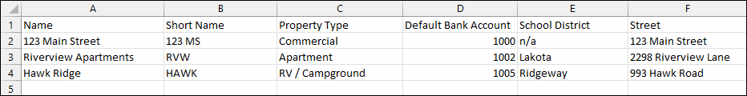

Source: https://rmxhelp.rentmanager.com/Topics/Express/KB/LP-Importing.htm
Import Data
The importing tool allows you to pull in large amounts of data into Rent Manager at one time, greatly reducing the amount of time spent on data entry. This is especially useful when setting up your Rent Manager database, or during routine additions that require a lot of new data, such as acquiring a new property.
This process is done via a .csv (comma-separated value) file or other file type that uses supported delimiters. Rent Manager accepts the following file types when performing an import:
-
Comma Separated Value (.csv)
-
Text (.txt)
-
Tab Separated (.tab)
-
Interchange (.iif)
Generally, .csv files use commas, .txt files use spaces, and .tab files use tabs. If the data displays incorrectly in the preview, you can select each character option until the data displays correctly. The file is first prepared outside Rent Manager, using a program such as Microsoft Excel or Notepad, which contains rows of data representing the information that matches to designated Rent Manager fields.

The import file contains rows for each entry and columns for each Rent Manager field to which you are importing data values. For example, an import of property data is displayed with each row representing a different property and each column representing information about that property. Then you are prompted to match those columns of data to specific Rent Manager fields. At the end of the importing process, Rent Manager also tells you each row that was successfully imported, as well as any rows that failed to import and the reason why, allowing you to fix the data in your import file and try again.